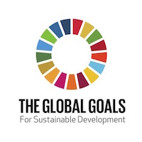

AT&T's Don't Text & Drive
Stay alive, don't text and drive campaign
Click the link to read the full article:
AT&T It Can Wait Campaign


“Technology is like a drug,” Genereux said. “It plays to our pleasure center. Don’t just get on it if you’re bored. Use it with purpose..”
Click the link to read the full article:
Kstate Collegian Tech Article
"..In 2015, world leaders agreed to 17 goals for a better world by 2030. These goals have the power to end poverty, fight inequality and stop climate change. Guided by the goals, it is now up to all of us, governments, businesses, civil society and the general public to work together to build a better future for everyone."

Click the link to read the full article:
The Bill Gates Project
Stay alive, don't text and drive campaign
Click the link to read the full article:
AT&T It Can Wait Campaign
Sign up for alerts and Tips Today- This website is a great source to develop good habits and live a healthier life away from technology!
Click the link to read the full article:
CommonSenseMedia.org
Finding a Healthy Balance
Primed Mind...Headspace..
How can we set aside time for mindfulness...exercise that promotes good body mechanics/body posture...set screen time limits and follow through with them by exercising self-discipline...get some fresh air!
Here are some helpful links to improve your mental and physical well being- check them out today!
Sport&Dev.org
Heart.org
Primed Mind...Headspace..
Bono's "One" Campaign...Bill Gate's...Gripsed "Evan Jarvis"..Alec Torelli..Luke Brennan?..(link to link'd in..
Holding yourself to a higher standard and setting a better example for those in need...Link for Habitat for Humanity...Local highway clean-up crews...Homeless shelters (enter your zip, find local)...